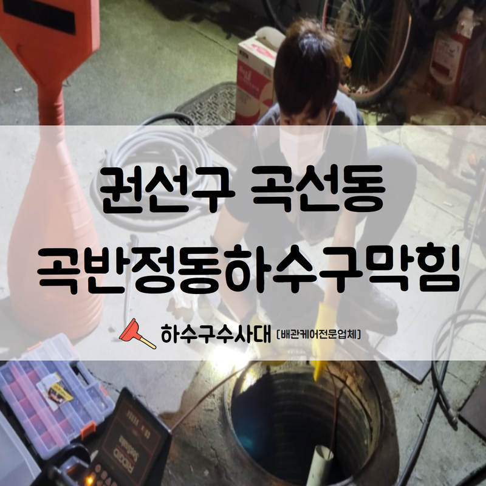
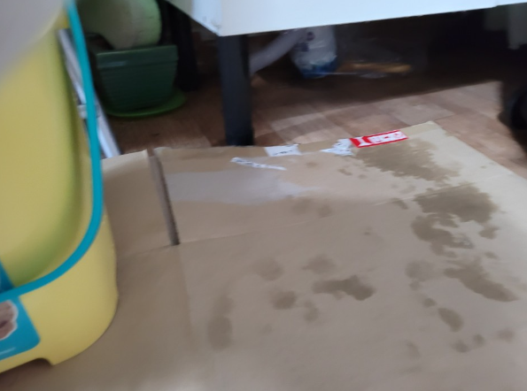
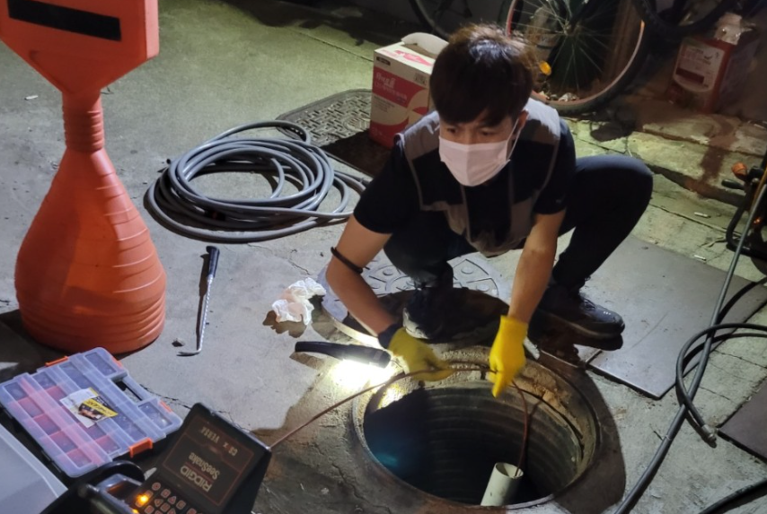
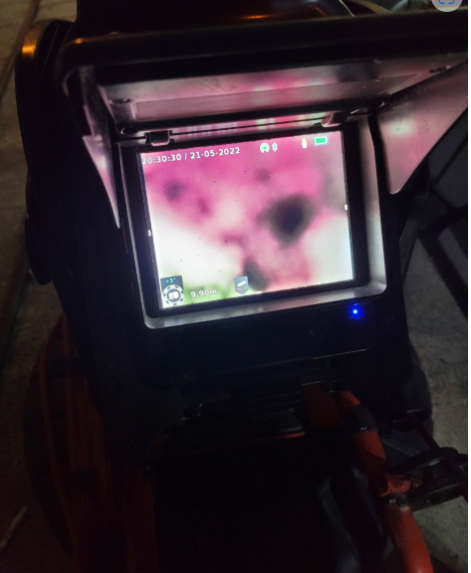
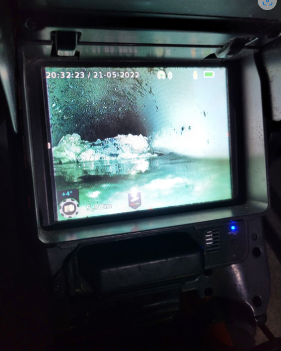
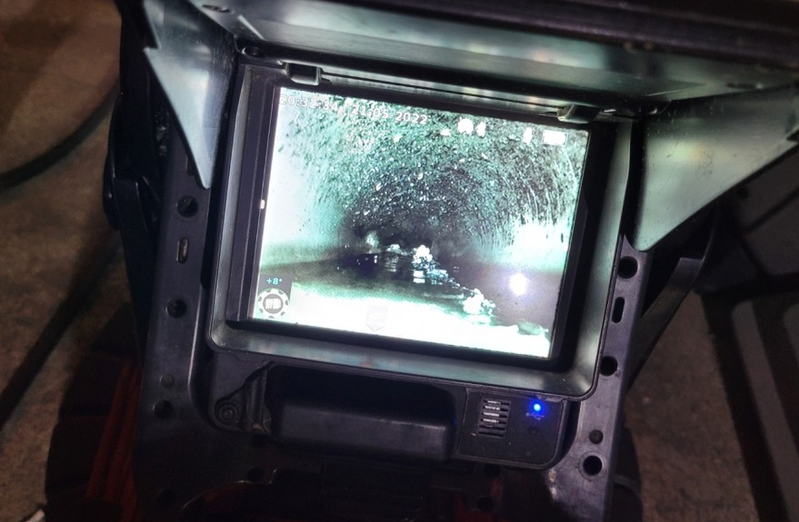
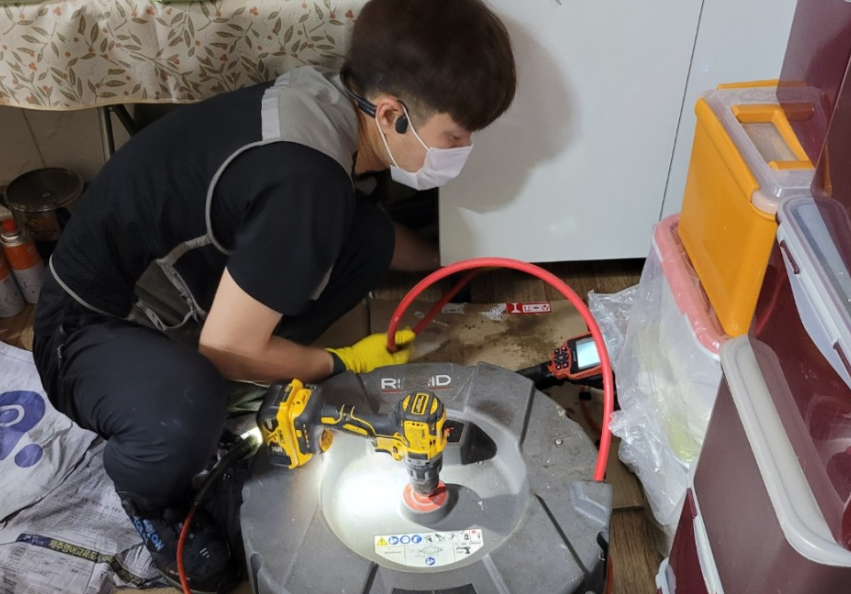

🏠 권선구 곡선동 곡반정동하수구막힘 고압세척으로 말끔하게 해결하여 드렸습니다!
수원 곡반정동 하수구막힘 전문 시공 후기

📋 작업 개요
- 위치: 수원 곡반정동, 곡반정동, 수원
- 서비스 유형: 하수구막힘, 배관막힘, 맨홀막힘, 역류해결, 뚫는업체, 고압세척
- 작업 일시: 2022. 7. 13. 10:25
- 업체명: 하수구수사대 (010-5615-2118)
🔍 문제 상황
안녕하세요.하수구수사대 입니다.반갑습니다.
장마가 다가와서 습도가 높아지면서 잠시만 외출을 해도 온몸이 끈끈해 져서 불쾌지수가 매우 높습니다. 이런 날씨로 인해서 몸과 기분도 쳐지실 테지만, 조금 기운을 내서 하루를 마무리 해보시기 바랍니다. 오늘도 기운찬 하루 보내셨길 바라면서 권선구 곡선동 곡반정동하수구막힘 포스팅을 해보겠습니다.
수원 시공현장을 말씀드려보겠습니다.
하수구막힘 으로 문제가 생기셨다고 고객님이 전화를 주셔서 다녀온 현장을 소개해 드릴 텐데요. 먼저 문제점을 알아보기 위해 외부에 있는 맨홀을 통해 내시경 작업을 먼저 시작했습니다. 확인한 맨홀은 예상보다 심각한 상태였고 악취는 계속 발생하고 있었습니다.
하수구에 악취가 나는 경우는 보통 , 배수관 안에 상당히 많은 이물질이 가득 차서 발생하는 냄새가 관을 타고 올라오는 것이어서 원인 해결을 해주어야 합니다.

🔎 원인 분석
💡 전문가 진단: 수원 시공현장을 말씀드려보겠습니다.
권선구 현장은 다세대 주택 근처였습니다.
그래서 해당 배관을 통하는 여러 세대들이 같은 현상으로 고생하고 계셨습니다. 게다가 아래층 쪽에 거주하시는 세대들은 하수구에서 역류 현상까지 있으셨다고 하소연을 하셨습니다. 얼른 근본적인 문제를 파악해서 이 이상의 피해가 없도록 내시경을 통해 맨홀 배수관을 확인했습니다.
내시경은 외관으로는 알 수 없는 배수구 상태를 확인할 수 있는 장비입니다. 우리가 눈으로 보기 힘든 배관 내부 상황을 볼 수 있게 만드는 장비며, 권선구 현장은 물론이고 어떤 현장에서든 필수로 진행되는 절차입니다.
저희가 내시경을 이용해 내부를 확인하니 상태는 예상보다 더 심각했습니다.
권선구 곡선동 곡반정동하수구막힘 은 다세대 주택인 만큼 해당 배관을 통하는 세대가 많아 , 그 모든 세대에서 발생되는 여러 가지 이물질 덩어리와 오염물질들이 배관을 가득 채워 막고 있었습니다. 보통 이런 경우에는 일반적인 스프링 기계를 사용해서는 상황을 해결하기 힘듭니다.

🔧 작업 과정
꼭 고압세척기를 사용해야만 권선구 하수구막힘 현장을 해결할 수 있습니다. 내시경을 통해 원인을 확인했으니 본격적으로 해결을 시작하기 위해 고압세척작업을 준비합니다.
고압세척이란 무엇일까요?
강력한 압력과 높은 온도의 물을 배수구 내부로 흘려 문제가 되고있는 이물질을 작은 크기로 부수고 제거하는 장비입니다. 고압세척은 물로만 작업하는 것이라 배수관에 무리를 주지 않고 작업할 수 있는 효율적인 방법입니다. 간단한 작업과정은 아니지만 체계적인 배수관 작업을 위해 차근차근 진행합니다.
고압세척과정은 기술력을 많이 필요로 하는 작업이기 때문에 실력 있는 업체를 통하시는 게 중요합니다. 고가의 장비를 보유하고 있다고 해도 실력이 부족하면 신뢰하기에 어려움이 있으므로, 업체의 경력이나 노하우에 대한 부분도 알아보시고 작업을 맡기시는 것도 중요합니다.
저희 하수구수사대는 현장의 문제점을 먼저 파악하고 그에 맞는 시공을 해드립니다.
하수구 막힘을 뚫는 작업은 저가의 작업이 아니므로 반드시 고객님의 컨펌 후에 작업을 진행하고 있습니다. 강력한 수압으로 하수관 내부에 쌓인 이물질 덩어리들은 분쇄돼서 깔끔하게 제거가 됩니다. 이 작업은 생각하시는 거 보다 수압이 강력하기 때문에 주로 외부 맨홀에서 진행됩니다.
이런 외부 맨홀 작업은 물론이고 일반 가정집 현장에도 사용 가능한 다양한 장비가 구비되어 있습니다. 그래서 권선구 곡선동 곡반정동하수구막힘 을 저희 하수구수사대에 맡겨주시면 신속하고 안전하고 말끔하게 해결해드립니다. 여러 번 고압세척을 한 뒤 권선구 곡선동 곡반정동하수구막힘 현장의 모든 문제는 해결되었습니다.
이번 작업을 통해 고객님께서도 앞으로 하수구 걱정 없이 살 수 있으시겠다며 만족하셨습니다.


✅ 작업 완료
하수구수사대는 고객님의 하수구 걱정 없이 생활하실 수 있게 노력하겠습니다.
경기도 수원시 권선구 곡반정로97번길 9 5층




⚠️ 하수구 배관 막힘 예방 및 관리 가이드
- ✅ 머리카락, 비닐, 물티슈 등 물에 분해되지 않는 이물질은 하수구 유입을 절대 금지해 주세요.
- ✅ 하수구 거름망을 씌우고 모여진 이물질은 주기적으로 쓰레기통에 바로 비워주셔야 합니다.
- ✅ 배관 노후가 심할 경우 이물질이 더 쉽게 걸리므로 주기적인 배관 세척(고압세척 등)을 권장합니다.
- ✅ 작업 후 1년 이내 재발 시 하수구수사대에서 무상 A/S 보증 서비스를 제공합니다.
💡 핵심 정리
- 확실한 장비 작업(내시경 점검 및 샤프트 스케일링)으로 원인을 뿌리 뽑습니다.
- 작업 후 1년 이내에 동일한 부위 재발 시 100% 무상 A/S 서비스를 보장합니다.
- 서울 · 경기 · 인천 전 지역에 24시간 언제든 긴급 출동할 수 있도록 항시 대기 중입니다.
❓ 자주 묻는 질문 (FAQ)
🚨 수원 곡반정동 하수구막힘 문제로 고민이신가요?
정확한 원인 진단과 확실한 시공으로 재발 없는 해결을 약속드립니다.
24시간 긴급 출동 | 서울 · 경기 · 인천 전지역 | 1년 내 재발 시 무상 A/S